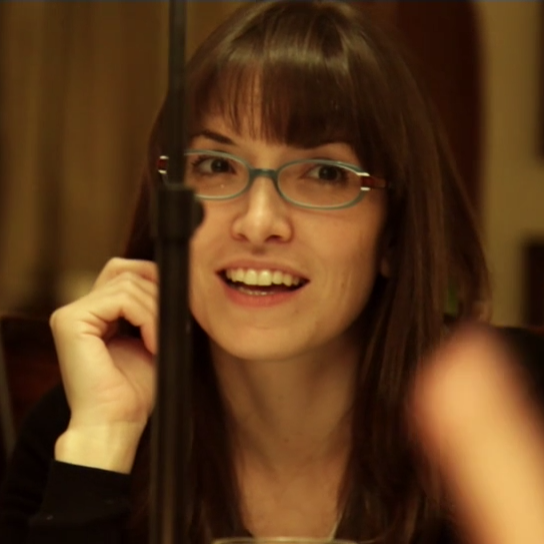
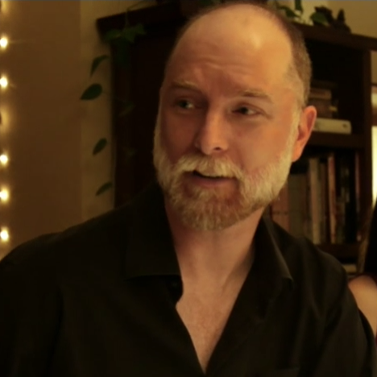
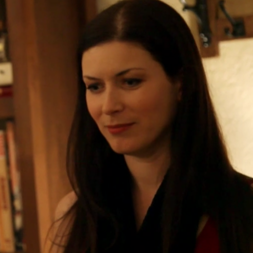

Coherence is a beautifully crafted low-budget take on science fiction that follows a group of friends at a dinner party while a comet passes overhead. Told through shaky hand-held angles and predominantly improvised dialogue, the narrative presented is intimate and captivating. The actors’ chemistry and naturally chaotic method of extemporized communicating throughout the group creates a uniquely genuine experience for the audience. While initially presenting as a slow-burn, the film manages to provide a remarkable amount of suspense during its 88 minute runtime. I recommend initially seeing Coherence without knowing anything, and it is absolutely a movie that warrants rewatching. I rate it 10/10 stars, because despite so many creative limitations (miniscule budget, singular location, ultra-expedited schedule, etc) I believe it is perfectly thought-provoking and surpassed every expectation of a cerebral film.
| Emily | Kevin | Mike | Lee | Hugh | Beth | Amir | Laurie |
|---|---|---|---|---|---|---|---|
| Emily Bandoni | Maury Sterling | Nicholas Brendon | Lorene Scafaria | Hugo Armstrong | Elizebeth Gracen | Alex Manugian | Lauren Maher |
|  |  |  |
We don’t need to focus on each character’s backstory, it won’t matter. The general
premise of the film involves travelling through alternate realities, and therefore creates
an interesting dilemma concerning the legitimacy of anything we see on the screen.
All we know for sure is that we follow Emily, every other character changes
multiple times in both miniscule and significant ways.
Emily arrives at Mike and Lee’s for dinner with long time friends on the night Miller’s Comet passes overhead. They all have a normal dinner until the power goes out. The group discovers another house on the street with power. They split up to investigate and discover it is also Mike and Lee’s house in an alternate reality with copies of themselves. They return home and discuss the idea of Schrödinger's Cat and Decoherence. They begin to become concerned about their safety from the “dark versions” of themselves. Their night crumbles despite their attempts to make sense of the night and stay in their own reality, while the audience knows they have been switching realities the entire time. Emily decides to leave her reality after watching her group break down completely and goes on a search for a better life. She literally window shops for a new reality until she stumbles upon a happy group and violently replaces that reality’s copy of her. She wakes up the next morning and we are left to wonder what happens when you try to control your fate.
Confused? The extremely detailed Synopsis and the easier to digest Time Line will both explain everything much further.
© Arrien Gadue, 2019